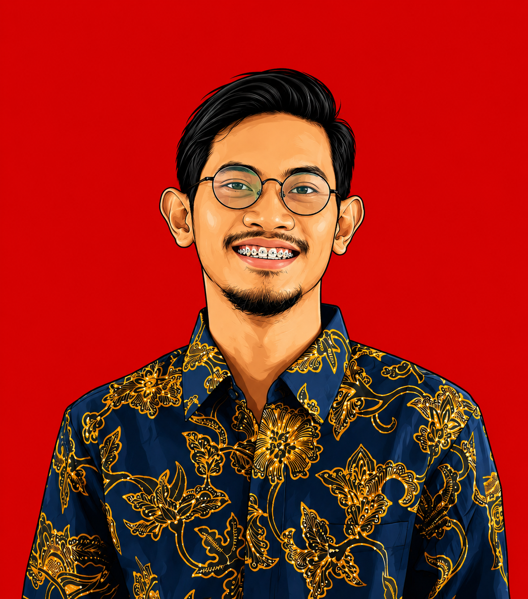

01 / SYSTEMS↗
Robotika & ROV
Robot bergerak dan kendaraan bawah air untuk observasi serta inspeksi di lingkungan menantang.
Dosen dan peneliti Teknik Elektro yang mengeksplorasi robotika bawah air, computer vision, dan kecerdasan buatan.
Data profil diperiksa 12 Oktober 2026 · lihat sumber resmi untuk pembaruan.

GRAMANDHA WEGA INTYANTOBagaimana mesin dapat melihat, memahami lingkungan, lalu bertindak dengan tepat? Pertanyaan itu menjadi benang merah ketertarikan saya pada robotika dan kecerdasan buatan.
Sebagai dosen dan peneliti di Universitas Jember, saya tertarik mengembangkan teknologi yang tidak berhenti di teori. Proyek dan eksperimen saya mengeksplorasi machine learning, computer vision, robotika, dan pengembangan aplikasi.
Informasi afiliasi mengikuti profil SINTA dan Google Scholar. Riwayat pendidikan dapat ditambahkan setelah diverifikasi.
Empat benang minat yang saling terhubung dalam eksplorasi teknologi saya.
Robot bergerak dan kendaraan bawah air untuk observasi serta inspeksi di lingkungan menantang.
Menerjemahkan data visual menjadi pemahaman yang berguna untuk inspeksi dan pengambilan keputusan.
Eksplorasi machine learning dan AI untuk membangun sistem yang adaptif dan aplikatif.
Memahami pengalaman pengguna agar teknologi terasa jelas, berguna, dan mudah diakses.
Bahasa pemrograman dan teknologi yang saya pahami dan gunakan dalam eksplorasi serta pengembangan solusi.
Riset tentang performa YOLOv11 pada sistem visi berbasis ROV untuk inspeksi jaring keramba budidaya perikanan—memadukan robotika bawah air dan deteksi objek.
Lihat publikasi ↗Aplikasi desktop Windows untuk membaca PDF dan menambahkan anotasi, highlight, gambar, serta perubahan halaman.
Lihat repository ↗Alur kerja klasifikasi Logistic Regression dari eksplorasi dan evaluasi model hingga aplikasi web interaktif.
Lihat repository ↗Eksperimen klasifikasi lima jenis bunga dengan CNN dan transfer learning, disertai aplikasi prediksi berbasis web.
Lihat repository ↗Aplikasi pembelajaran alur klasifikasi Random Forest dengan data sintetis dan antarmuka prediksi berbasis web.
Lihat repository ↗Ringkasan proyek berdasarkan profil dan README repositori GitHub publik. Detail teknis lengkap ada di masing-masing repository.
Karya cipta, paten, dan buku yang tercantum pada profil SINTA.
Akademi Komunitas Negeri Pacitan
Akademi Komunitas Negeri Pacitan
Universitas Jember
Informasi afiliasi tidak dicantumkan pada entri SINTA yang ditampilkan.
Status dan nomor permohonan ditampilkan sesuai entri SINTA; periksa profil sumber untuk informasi terkini.
UPT Penerbitan Universitas Jember (UNEJ Press) · Jember
UPT Penerbitan Universitas Jember (UNEJ Press)
Deepublish · Yogyakarta
Syiah Kuala University Press · Aceh
Syiah Kuala University Press · Aceh
9th International Conference on Electrical, Electronics and Information Engineering
Walisongo Journal of Information Technology, 5(1), 41–52
Jurnal Arus Elektro Indonesia, 7(3), 80–83
Walisongo Journal of Information Technology, 3(2), 59–68
Metadata dan daftar publikasi dapat berubah. Periksa Google Scholar untuk daftar lengkap dan informasi terbaru.
Publikasi, indeks, dan jejaring riset merupakan bagian dari perjalanan akademik yang terus berkembang.
Metrik bersumber dari profil masing-masing dan dapat berbeda antarplatform.
Terbuka untuk diskusi riset, kolaborasi akademik, dan pertukaran gagasan seputar robotika dan AI.
Terhubung melalui profil akademik ↗